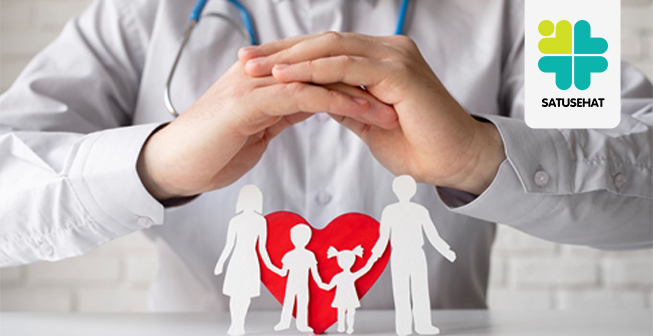

Welcome to our Health Website
MENGENAL PENGERTIAN SATU SATUSEHAT

SATUSEHAT merupakan platform integrasi data kesehatan individu antar fasyankes untuk standardisasi dan interoperabilitas data menuju penerapan rekam medis elektronik (RME) di seluruh fasyankes pada tahun 2023 yang telah diatur dalam Peraturan Menteri Kesehatan (PMK) Nomor 24 tahun 2022 tentang Rekam Medis.
Lahirnya platform SATUSEHAT merupakan hasil kerja dan koordinasi antara Pusat Data dan Teknologi Informasi dan Digital Transformation Office (Pusdatin-DTO) dengan Direktorat Jenderal Pelayanan Kesehatan (Ditjen Yankes).
Dengan adanya platform SATUSEHAT, pertukaran data kesehatan diharapkan dapat lebih efisien dan efektif. Data tersebut dapat dimanfaatkan fasyankes yang telah terintegrasi platform SATUSEHAT untuk mendapatkan referensi informasi kesehatan pasien saat berpindah fasyankes maupun keperluan tindakan kedaruratan medis. Hal tersebut diharapkan dapat meningkatkan pelayanan kesehatan yang lebih optimal sehingga mendorong pemerintah dalam mengambil kebijakan kesehatan dan tenaga kesehatan (nakes) dalam mengambil keputusan klinis berbasis data yang diperoleh secara near real-time.
Masyarakat juga tidak perlu lagi membawa rekam medis fisik jika harus berpindah fasyankes. Rekam medis pasien akan terekam secara digital di platform SATUSEHAT yang terintegrasi dengan aplikasi kesehatan masyarakat (SATUSEHAT App) dan bisa diakses melalui ponsel atas persetujuan pengguna.
SATUSEHAT App diharapkan menjadi gaya hidup baru masyarakat yang dapat digunakan sehari-hari, seperti pengingat minum obat, terkoneksi dengan wearable device, sertifikat imunisasi anak, dan fitur-fitur kesehatan lainnya.
Platform SATUSEHAT menjadi penghubung sistem dan seluruh ekosistem pelaku dalam industri kesehatan, seperti rumah sakit, puskesmas, start-up, apotek, dinas kesehatan (Dinkes), industri kesehatan, laboratorium, dan lainnya dengan menyediakan spesifikasi dan mekanisme terstandar untuk proses bisnis, data, teknis, dan keamanan.
Health Content
Konten Kesehatan yang Informatif Dukung Sistem Kesehatan yang Lebih Baik
PENINGKATAN minat masyarakat terhadap isu kesehatan harus segera direspon dengan produksi konten yang informatif terkait sejumlah kebijakan dalam rangka pengembangan sistem kesehatan nasional yang lebih baik.
"Di tengah merebaknya beragam penyakit di era globalisasi ini, tren peningkatan minat masyarakat terhadap isu kesehatan sangat menggembirakan," kata Wakil Ketua MPR RI, Lestari Moerdijat dalam keterangan tertulisnya
Survei Penetrasi & Perilaku Internet 2023 yang dilakukan Asosiasi Penyelenggaraan Jasa Internet Indonesia (APJII) mengungkap bahwa konten seputar kesehatan merupakan topik yang paling sering dikunjungi oleh masyarakat, yakni sebesar 36,96% dari total responden.
BACA JUGA : Artikel tentang kesehatan